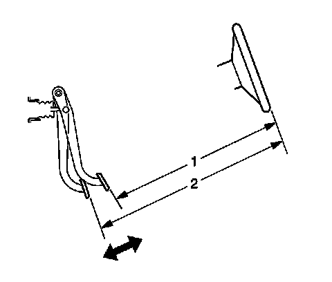

Brake Pedal Travel Measurement and Inspection
Brake Pedal Travel Measurement and Inspection
Tools Required
J 28662 Brake Pedal Effort Gauge
1. With the ignition OFF and the brakes cool, apply the brakes 3-5 times, or until the brake pedal becomes firm, in order to deplete the brake booster power reserve.
2. Install the J 28662 to the brake pedal.

3. Measure and record the distance (1) from the brake pedal to the rim of the steering wheel; note the points of measurement.
4. Apply and maintain the brakes with 445 N (100 lb) of force to the brake pedal, as indicated on the J 28662 .
5. While maintaining 445 N (100 lb) of force to the brake pedal, measure and record the distance (2) from the same point on the brake pedal to the same point on the rim of the steering wheel.
6. Release the brakes and repeat steps 4 and 5 to obtain a second measurement. After obtaining a second measurement, proceed to step 7.
7. Average the first and second measurements recorded during the two applies of the brakes.
8. Subtract the initial measurement, unapplied (1), from the averaged, applied measurement (2) to obtain the brake pedal travel distance.
Maximum brake pedal travel (measured with the ignition OFF, brake booster power assist depleted, and the brakes cool): 63.5 mm (2.5 in).